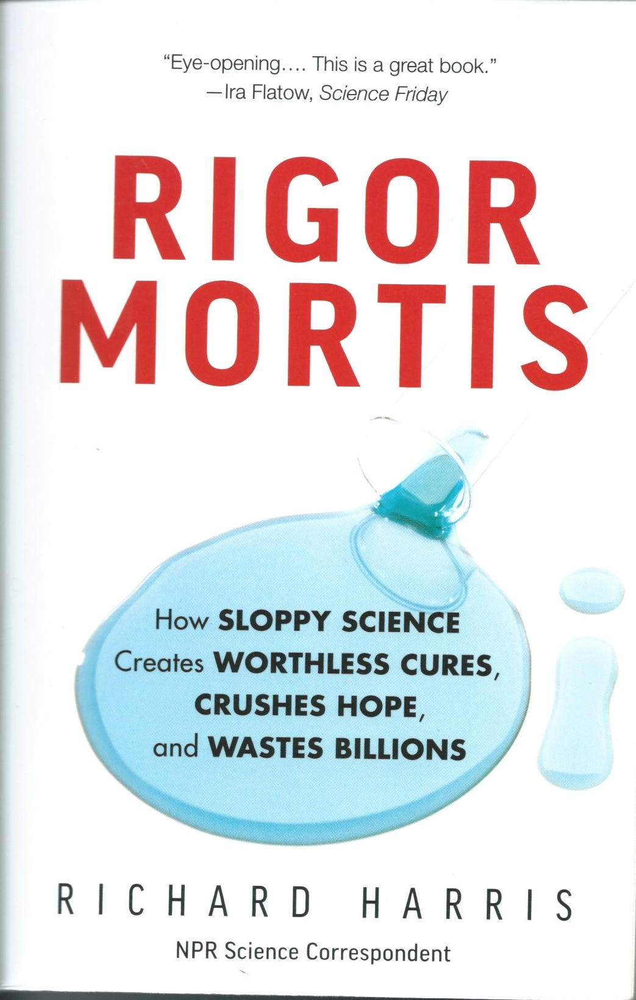
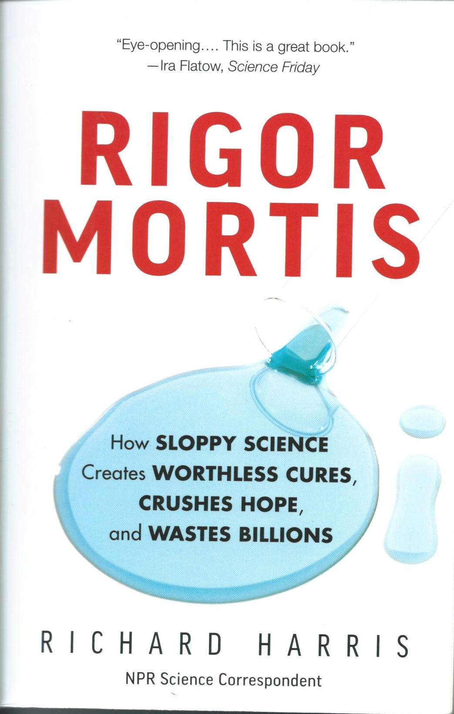

Course intro
Prelude
I like to have a series of songs or videos ready to play before class begins. They are loosely related to some of the themes of the course that day. Most are songs or artists I like. Showing them is just for fun.
Today’s Topics
- Introductions
- Course overview
- Are we (scientists, the public) fooling ourselves? How can we know? Why might it matter?
Introductions


Resources

{kind=link}
Other readings
Book selections

 

- Scanned PDFs of book selections are available on Canvas: https://psu.instructure.com/courses/2245007/files/folder/readings
Articles
- Retrieve them yourself via the URL (uniform resource locator) and the DOI (digital object identifier).
- Why do I do this?
Themes/topics
- What is science trying to do?
- What practices and norms constitute better science? What practices and norms constitute poorer science?
- Is there a crisis of reproducibility or replicability in psychological science?
- Is there a crisis in other areas of science?
- What are scientists doing to address these criticisms?
Assignments & evaluation
- Class attendance
- Exercises
- Final project
Are we (scientists, the public) fooling ourselves? How can we know? Why might it matter?
Feynmann on ‘Cargo Cult Science’

Figure 8: Richard P. Feynman, Wikipedia
- Who was he?
What does Feynman mean by ‘Cargo Cult Science’?
I think the educational and psychological studies I mentioned are examples of what I would like to call Cargo Cult Science. In the South Seas there is a Cargo Cult of people. During the war they saw airplanes land with lots of good materials, and they want the same thing to happen now. So they’ve arranged to make things like runways, to put fires along the sides of the runways, to make a wooden hut for a man to sit in, with two wooden pieces on his head like headphones and bars of bamboo sticking out like antennas—he’s the controller—and they wait for the airplanes to land. They’re doing everything right. The form is perfect. It looks exactly the way it looked before. But it doesn’t work. No airplanes land. So I call these things Cargo Cult Science, because they follow all the apparent precepts and forms of scientific investigation, but they’re missing something essential, because the planes don’t land.
More about “cargo cults”: (rjlipton, 2023)
Implicit rules (practices or norms) in science
…That is the idea that we all hope you have learned in studying science in school—we never explicitly say what this is, but just hope that you catch on by all the examples of scientific investigation. It is interesting, therefore, to bring it out now and speak of it explicitly. It’s a kind of scientific integrity, a principle of scientific thought that corresponds to a kind of utter honesty—a kind of leaning over backwards. For example, if you’re doing an experiment, you should report everything that you think might make it invalid—not only what you think is right about it: other causes that could possibly explain your results; and things you thought of that you’ve eliminated by some other experiment, and how they worked—to make sure the other fellow can tell they have been eliminated.
Principle 1: Don’t fool yourself
The first principle is that you must not fool yourself—and you are the easiest person to fool. So you have to be very careful about that. After you’ve not fooled yourself, it’s easy not to fool other scientists. You just have to be honest in a conventional way after that.
Principle 2: Show how your maybe wrong
I’m talking about a specific, extra type of integrity that is not lying, but bending over backwards to show how you’re maybe wrong, that you ought to do when acting as a scientist. And this is our responsibility as scientists, certainly to other scientists, and I think to laymen.
Principle 3: Publish your results whichever way they come out
One example of the principle is this: If you’ve made up your mind to test a theory, or you want to explain some idea, you should always decide to publish it whichever way it comes out. If we only publish results of a certain kind, we can make the argument look good. We must publish both kinds of result.
Figure 10: (Oreskes, 2019)
Flaws in how science is actually practiced
Other kinds of errors are more characteristic of poor science. When I was at Cornell. I often talked to the people in the psychology department. One of the students told me she wanted to do an experiment that went something like this—I don’t remember it in detail, but it had been found by others that under certain circumstances, X, rats did something, A. She was curious as to whether, if she changed the circumstances to Y, they would still do, A. So her proposal was to do the experiment under circumstances Y and see if they still did A. I explained to her that it was necessary first to repeat in her laboratory the experiment of the other person—to do it under condition X to see if she could also get result A—and then change to Y and see if A changed. Then she would know that the real difference was the thing she thought she had under control. She was very delighted with this new idea, and went to her professor. And his reply was, no, you cannot do that, because the experiment has already been done and you would be wasting time. This was in about 1935 or so, and it seems to have been the general policy then to not try to repeat psychological experiments, but only to change the conditions and see what happens.
- Principle 4: Replicate then extend.
Principle 5: Scientific integrity requires a form of freedom
…So I have just one wish for you—the good luck to be somewhere where you are free to maintain the kind of integrity I have described, and where you do not feel forced by a need to maintain your position in the organization, or financial support, or so on, to lose your integrity. May you have that freedom.
Questions to ponder
- Do you agree or disagree with Feynman’s characterizations of poor science? Why or why not?
- What are Feynman’s ‘rules’ or principles?
- Are these ‘rules’ or principles taught explicitly? Where and how?
- If not, why not?
- Do you agree or disagree that these rules are essential for scientific integrity?
- Why does Feynman suggest that you, the scientist or student, are the easiest one to fool?
Going deeper
- Thu Jan 12: How science works or should work
- Tue Jan 17: Scientific norms and counter-norms
- Thu Jan 19: Adherence to norms and counter-norms.
- Exercise 01: Norms and counter-norms
Begley’s ‘Bombshell’
- Reading: (Harris, 2017), Chapter 1.
Figure 11: (Harris, 2017)
Background
The scientific community assumes that the claims in a preclinical study can be taken at face value — that although there might be some errors in detail, the main message of the paper can be relied on and the data will, for the most part, stand the test of time. Unfortunately, this is not always the case.
Over the past decade, before pursuing a particular line of research, scientists (including C.G.B.) in the haematology and oncology department at the biotechnology firm Amgen in Thousand Oaks, California, tried to confirm published findings related to that work. Fifty-three papers were deemed ‘landmark’ studies (see ‘Reproducibility of research findings’). It was acknowledged from the outset that some of the data might not hold up, because papers were deliberately selected that described something completely new, such as fresh approaches to targeting cancers or alternative clinical uses for existing therapeutics. Nevertheless, scientific findings were confirmed in only 6 (11%) cases. Even knowing the limitations of preclinical research, this was a shocking result.
| Journal Impact Factor | \(n\) articles | Mean number of citations for non-reproduced articles | Mean number of citations of reproduced articles |
|---|---|---|---|
| >20 | 21 | 248 [3, 800] | 231 [82-519] |
| 5-19 | 32 | 168 [6, 1,909] | 13 [3, 24] |
Findings
- Findings of 6/53 published papers (11%) could be reproduced
- Original authors often could not reproduce their own work
- Earlier paper (Prinz, Schlange, & Asadullah, 2011) had also found low rate of reproducibility. Paper titled “Believe it or not: How much can we rely on published data on potential drug targets?”
- Figure 1 from (Prinz et al., 2011)
{kind=link}
We received input from 23 scientists (heads of laboratories) and collected data from 67 projects, most of them (47) from the field of oncology. This analysis revealed that only in ∼20–25% of the projects were the relevant published data completely in line with our in-house findings
- Published papers (that can’t be reproduced) are cited hundreds or thousands of times
- Cost of irreproducible research estimated in billions of dollars (Freedman, Cockburn, & Simcoe, 2015).
An analysis of past studies indicates that the cumulative (total) prevalence of irreproducible preclinical research exceeds 50%, resulting in approximately US$28,000,000,000 (US$28B)/year spent on preclinical research that is not reproducible—in the United States alone.
- Figure 2 from (Freedman et al., 2015)
Information about U.S. Research & Development (R&D) Expenditures from the Congressional Research Service. - Note that business accounts for 2-3x+ the Government’s share of R&D expenditures.
Questions to ponder
- Why does Harris call this a ‘bombshell’?
- Do you agree that it has/had or should have an ‘explosive’ impact? Why?
- Why do Begley & Ellis focus on a journal’s impact factor?
- Why do Begley & Ellis focus on citations to reproduced vs. non-reproduced articles?
- Why should non-scientists care?
- Why should scientists in other fields (not cancer biology) care?
Going deeper
- Tues Jan 24: Replication crisis
- Thu Feb 2: Replication in cancer biology
- Tue Feb 7: Reproducibility and replicability reconsidered.
- Exercise 04: Replication
Learn more
Talk by Begley (CrossFit, 2019)
Watching the talk by Begley is not required. But you might get inspired and decide to focus your final project around the topic.
“What I’m alleging is that the reviewers, the editors of the so-called top-tier journals, grant review committees, promotion committees, and the scientific community repeatedly tolerate poor-quality science.”
– C. Glenn Begley
Next time…
- How science works (or should)
- Read
- (Ritchie, 2020), Chapter 1.
- (Brian A. Nosek & Bar-Anan, 2012)
- Optional (Sagan, 1996), Chapter 12, “The Fine Art of Baloney Detection”